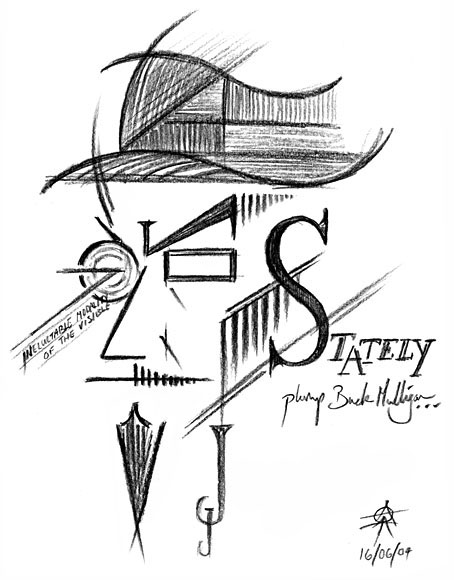

УЛИСС Джеймса Джойса
13. Приложение
(Данная схема УЛИСА взята из книги Стюарта Жильберта
"Улис Джеймса Джойса",
которую ему диктовал сам Дж. Дж.)
| НАЗВАНИЕ (эпизода) | 1. Телемах |
2. Нестор |
3. Протей |
4. Калипсо |
5. Лотофаги |
6. Аид |
|---|---|---|---|---|---|---|
| МЕСТО | Башня | Школа | Берег | Дом | Баня | Кладбище |
| ВРЕМЯ СУТОК ) | 8 ч. | 10 ч. | 11 ч. | 8 ч. | 10 ч. | 11 ч. |
| ОРГАН | Почка | Член | Сердце | |||
| ИСКУССТВО | Теология | История | Филология | Экономика | Ботаника, Химия | Религия |
| ЦВЕТ | Белый, золотой | Коричневый | Зелёный | Оранжевый | Белый, чёрный | |
| СИМВОЛ | Наследник | Конь | Прилив | Нимфа | Причастие | Похоронщик |
| ТЕХНИКА | Повество- вание (юношеское) | Катехизис (личностный) | Монолог (мужской) | Повествование (зрелое) | Нарцисизм | Кошмарство |
| НАЗВАНИЕ (эпизода) | 7. Эол |
8. Лестригоны |
9. Скила и Харибда |
10. Блуждающие Скалы |
11. Сирены |
12. Циклопы |
| МЕСТО | Газета | Столовая | Библиотека | Улицы | Муззал | Таверна |
| ВРЕМЯ СУТОК ) | 12 ч. | 13 ч. | 14 ч. | 15 ч. | 16 ч. | 17 ч. |
| ОРГАН | Лёгкие | Желудок | Мозг | Кровь | Ухо | Мышцы |
| ИСКУССТВО | Риторика | Архитектура | Литература | Механика | Музыка | Политика |
| ЦВЕТ | Красный | |||||
| СИМВОЛ | Редактор | Надзиратели | Стратфорд, Лондон | Горожане | Барменши |
Подполь- щики |
| ТЕХНИКА | Подразуме- вание | Перистатика | Диалектика | Лабиринт |
Фуга канони- ческая | Гигантизм |
| НАЗВАНИЕ (эпизода) | 13. Навсикая |
14. Быки Солнца |
15. Кирка |
16. Эвмей |
17. Итака |
18. Пенелопа |
| МЕСТО | Скалы | Роддом | Бордель | Забегаловка | Дом | Постель |
| ВРЕМЯ СУТОК ) | 20 ч. | 22 ч. | 24 ч. | 1 ч. | 2 ч. | |
| ОРГАН | Глаз, Нос | Влагалище | Опорно-двигатель- ный Аппарат | Нервы | Скелет | Плоть |
| ИСКУССТВО | Живопись | Медицина | Магия | Навигация | Наука | |
| ЦВЕТ | Серый, голубой | Белый | ||||
| СИМВОЛ | Дева | Матери | Шлюха | Матросы | Кометы | Земля |
| ТЕХНИКА | Нарастание, спадание |
Эмбрио- нальное развитие |
Галлюци- нация | Повествование (старческое) | Катехизис (безличный) | Монолог (женский |
